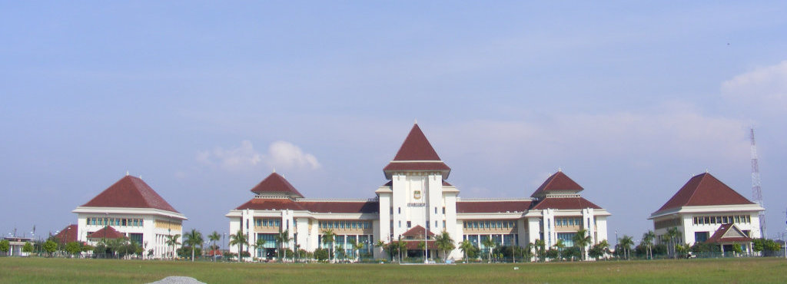
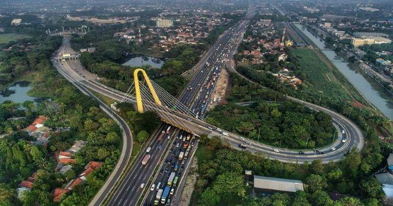
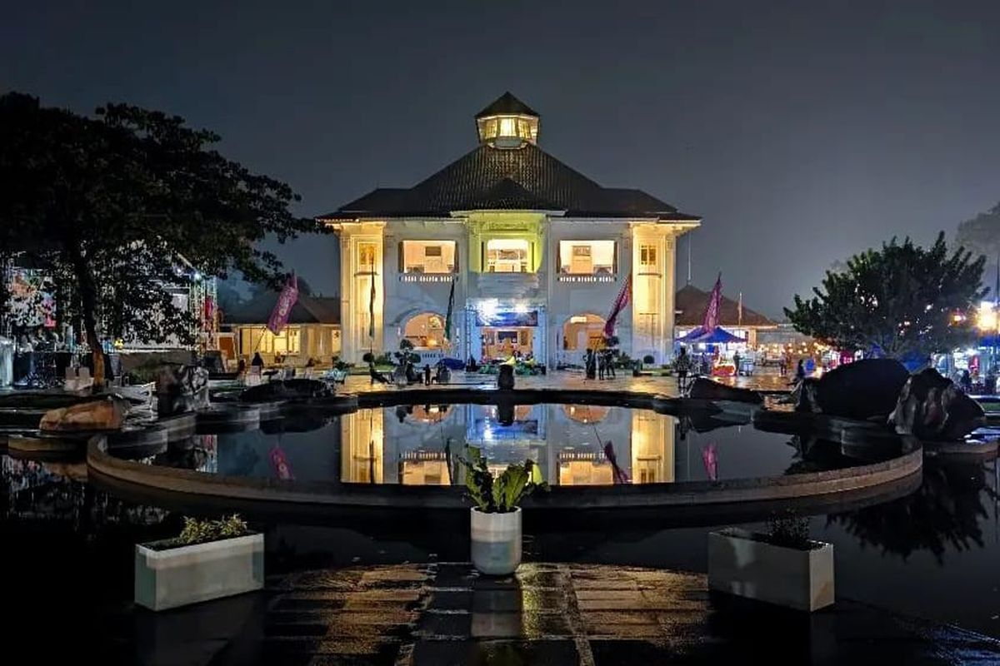
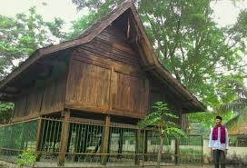
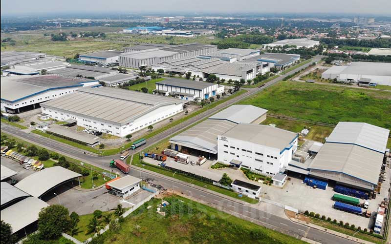

Sejarah

Bekasi memiliki sejarah panjang yang bermula dari era Kerajaan Tarumanagara, dengan bukti prasasti yang menyebutkan Sungai Candrabhaga sebagai bagian penting dalam kehidupan kerajaan. Nama Bekasi berasal dari kata "Candrabhaga,"
yang melalui perjalanan sejarah berubah pelafalannya hingga menjadi "Bekasi" seperti sekarang. Pada masa Kerajaan Padjadjaran, Bekasi dikenal sebagai pelabuhan sungai strategis yang ramai dikunjungi pedagang. Posisi strategis
ini tetap bertahan, bahkan ketika kekuasaan berganti ke Kerajaan Sumedanglarang, dengan penemuan situs-situs sejarah seperti makam Wangsawidjaja dan sumur di Ciketing yang mengindikasikan keterkaitan dengan kerajaan tersebut.
Pembentukan Kabupaten Bekasi dimulai pada masa kolonial Hindia Belanda, ketika wilayah ini termasuk dalam distrik subur dengan hasil pertanian yang melimpah. Namun, tanah-tanahnya dikuasai oleh tuan-tuan tanah Eropa dan
Tionghoa, sementara rakyat setempat sering mengalami penindasan. Setelah masa penjajahan dan kemerdekaan, Bekasi terus berkembang menjadi wilayah administratif penting. Pada era modern, statusnya diperkuat dengan pembentukan
Kabupaten Bekasi, yang berperan besar dalam pengelolaan wilayah pertanian, perdagangan, dan kawasan industri, menjadikannya salah satu daerah penunjang utama bagi DKI Jakarta.
Geografis

Kabupaten Bekasi sebagian besar merupakan wilayah dataran rendah, dengan ketinggian 0–135 meter di atas permukaan laut, dan wilayah selatan yang berbatasan dengan Jonggol memiliki topografi berbukit. Dengan tanah yang dominan
stabil dan layak dikembangkan, wilayah ini sangat potensial untuk budidaya, termasuk tambak ikan dan peternakan. Jenis tanah di Kabupaten Bekasi terbagi menjadi tujuh kelompok, di mana 81,25% wilayahnya cocok untuk pengembangan.
Terdapat pula enam belas aliran sungai besar dan tiga belas situ yang menjadi sumber air penting untuk pemenuhan kebutuhan masyarakat, baik untuk pemukiman maupun industri. Selain air tanah dangkal, PDAM memanfaatkan air
permukaan untuk memenuhi kebutuhan konsumen.
Wilayah Bekasi memiliki tekstur tanah yang sebagian besar halus dan cukup baik dalam menahan erosi, kecuali di bagian selatan yang lebih rentan. Selain itu, kebutuhan sanitasi ditunjang oleh satu-satunya TPA yang terletak di
Burangkeng, Setu. Dengan adanya 13 situ dan sungai-sungai besar, Kabupaten Bekasi memiliki potensi besar untuk mendukung kegiatan perkotaan dan industrialisasi. Namun, pengelolaan sumber daya air dan tata kelola lingkungan perlu
mendapat perhatian untuk menjaga keberlanjutan wilayah ini sebagai pusat kegiatan ekonomi dan pemukiman di Jawa Barat.
Wisata
Sejak beroperasinya Jalan Tol Jakarta-Cikampek, Kabupaten Bekasi telah berkembang menjadi salah satu kawasan strategis yang menghubungkan Jakarta dengan kota-kota di Jawa Barat dan sekitarnya. Selain dikenal sebagai pusat
kawasan industri terbesar di Indonesia, Kabupaten Bekasi juga memiliki potensi wisata alam dan sejarah, termasuk keberadaan Gedung Juang Tambun yang merupakan peninggalan bersejarah dari masa penjajahan Belanda.
Gedung Juang 45

Gedung Juang Tambun, yang kini menjadi Museum Bekasi, terletak di Tambun Selatan, Kabupaten Bekasi. Gedung ini awalnya dibangun oleh Khouw Tjeng Kee, seorang tuan tanah dari keluarga Khouw van Tamboen, dalam dua tahap
(1906-1910 dan 1925). Pada masa kolonial, Gedung Juang memainkan peran penting sebagai Landhuis, hingga akhirnya disita oleh Jepang pada tahun 1942. Gedung ini menjadi pusat perlawanan saat perang kemerdekaan melawan Belanda,
berfungsi sebagai markas pertahanan dan tempat perundingan pertukaran tawanan. Selama masa penjajahan Jepang, gedung ini dijadikan markas, namun pada akhir perang, sempat terjadi pembantaian tentara Jepang oleh para pejuang
Indonesia di wilayah Bekasi.
Setelah kemerdekaan, Gedung Juang menjadi pusat pemerintahan Kabupaten Jatinegara dan tempat pertahanan melawan agresi Belanda hingga akhirnya dikuasai kembali pada tahun 1950. Gedung ini juga pernah digunakan untuk berbagai
keperluan, termasuk kantor dinas, markas TNI, hingga tempat tahanan politik. Pada tahun 1982, gedung ini difungsikan sebagai kampus Akademi Pembangunan Desa, yang kemudian menjadi Universitas Islam 45 Bekasi. Kini, setelah
renovasi pada 2020, Gedung Juang Tambun menjadi simbol sejarah Kabupaten Bekasi yang dapat diakses dengan berbagai moda transportasi, termasuk KRL Commuter Line.
Saung Ranggon

Saung Ranggon adalah rumah adat bersejarah di Desa Cikedokan, Kecamatan Cikarang Barat, Kabupaten Bekasi. Dibangun pada abad ke-16 atas perintah Pangeran Rangga, putra Pangeran Jayakarta, rumah ini awalnya berfungsi sebagai
tempat persembunyian dari kejaran pasukan Belanda. Pada tahun 1821, Raden Abbas menamai rumah ini "Saung Ranggon," yang dalam bahasa Sunda berarti rumah untuk menyimpan hasil tani. Dengan arsitektur khas Betawi, Saung Ranggon
berbentuk rumah panggung berukuran 7,6 x 7,2 meter, berdiri di atas tanah seluas 500 meter persegi. Rumah ini memiliki atap sirap berbentuk huruf V terbalik, dinding dari kayu dan bambu, serta tiang-tiang penyangga kayu.
Bangunan ini memiliki ketinggian lantai 2,5 meter dari tanah dan hanya terdiri dari satu ruangan utama tanpa sekat. Bagian bawah rumah digunakan untuk menyimpan benda pusaka, yang ditempatkan dalam ruang berbentuk sumur. Saung
Ranggon kini dikelilingi pagar besi setinggi 1,2 meter dan berada di ketinggian 61 meter di atas permukaan laut. Selain sebagai cagar budaya, rumah ini menjadi simbol penting sejarah Kabupaten Bekasi, menampilkan perpaduan
fungsi tradisional dan estetika arsitektur lokal.
Demografi
Kabupaten Bekasi mencatat jumlah penduduk sebesar 3,2 juta jiwa pada 2023, dengan pertumbuhan tahunan rata-rata (CAGR) sebesar 2,51% dalam lima tahun terakhir, lebih rendah dibandingkan periode lima tahun sebelumnya yang
mencapai 3,12%. Wilayah ini menempati urutan lima besar di Provinsi Jawa Barat dan Pulau Jawa berdasarkan jumlah penduduk. Mayoritas penduduk, sekitar 66,04% atau 2,11 juta jiwa, berada pada usia produktif (15-59 tahun).
Sementara itu, 27,01% terdiri dari kelompok usia anak-anak (0-14 tahun), dan 6,95% merupakan kelompok usia lanjut (60 tahun ke atas).
Berdasarkan distribusi umur, kelompok usia terbesar adalah 10-14 tahun dengan 9,6% dari total penduduk, diikuti oleh kelompok 40-44 tahun dengan 8,94%, dan kelompok 30-34 tahun dengan 8,34%. Kelompok usia lanjut, meskipun
persentasenya kecil, tetap signifikan dengan total lebih dari 222 ribu jiwa. Data ini menunjukkan struktur demografi yang didominasi penduduk usia produktif, memberikan potensi besar bagi pembangunan ekonomi di Kabupaten Bekasi.
Industri

Kabupaten Bekasi telah menjelma menjadi pusat industri utama di Indonesia dengan lebih dari 7.500 pabrik yang tersebar di 11 kawasan industri, seperti Kawasan Industri Jababeka dan Lippo Cikarang. Perkembangan ini menjadikan
Bekasi sebagai basis pertumbuhan ekonomi yang solid, didukung oleh sejarah panjang industri yang dimulai sejak zaman kolonial dengan keberadaan pabrik gula dan penggilingan padi. Transformasi ini tidak hanya memengaruhi
perekonomian lokal, tetapi juga membawa dampak sosial bagi masyarakat sekitar.
Kemajuan pesat industri di Bekasi juga ditopang oleh infrastruktur yang lengkap, seperti tol layang, kereta cepat, rel ganda, serta rencana pembangunan pelabuhan dan LRT. Keunggulan ini mendukung efisiensi logistik bahan baku
dan distribusi produk, menjadikan Bekasi salah satu kawasan yang sangat prospektif untuk investasi bisnis. Posisi aglomerasi yang strategis, di mana berbagai sektor industri terkonsentrasi dalam satu wilayah, semakin memperkuat
daya saing kawasan ini di tingkat nasional dan internasional.
Selain infrastruktur, harga lahan industri di Bekasi yang relatif lebih terjangkau dibandingkan Jakarta menjadi daya tarik tambahan. Dengan rata-rata harga tanah Rp2,4 juta hingga Rp3,2 juta per meter persegi, kawasan ini
memberikan nilai ekonomis tinggi bagi para investor. Kombinasi infrastruktur mumpuni, konsentrasi industri, dan harga tanah yang kompetitif menjadikan Kabupaten Bekasi sebagai wilayah dengan potensi besar untuk pertumbuhan
ekonomi berkelanjutan.